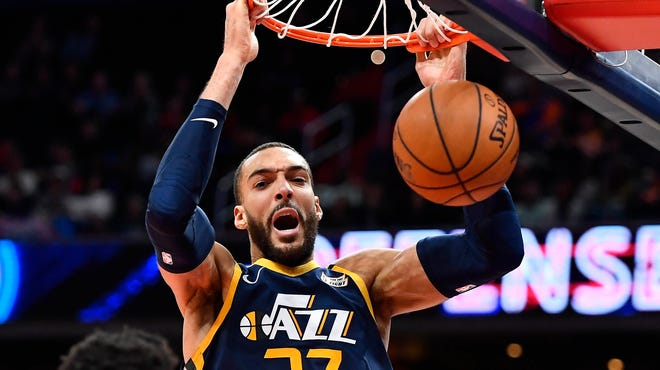
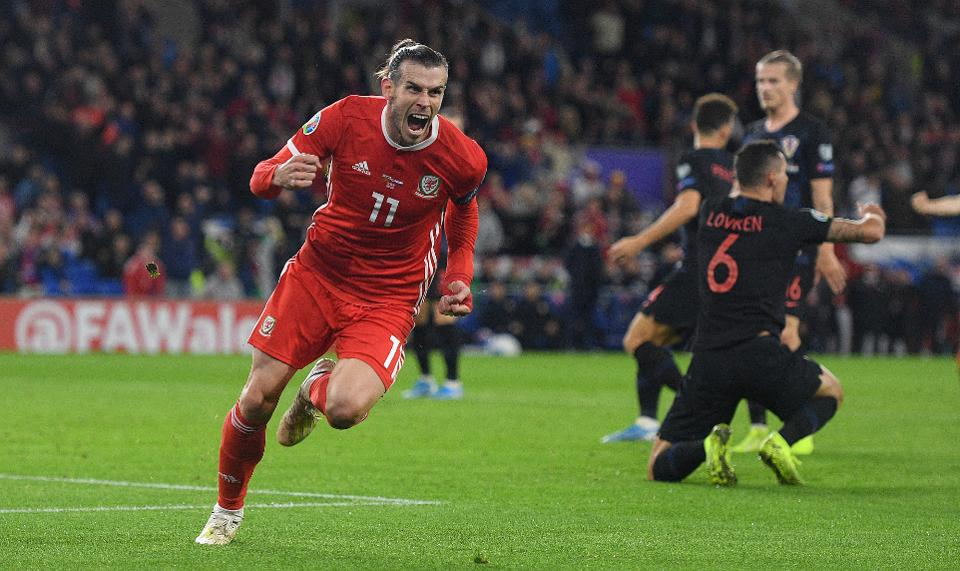
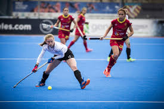

- 


- 
- 
Sports is a very important thing in human life, it maintains the physical and psychological health ,and here you will find a Short paragraph about sport contains everything you need to know about sports .Here you will find more than one paragraph to choose what suits your ideas.
Sports are defined as physical or mental exertion by individuals and are committed to maintaining physical or mental fitness. There are many types of exercise that can be practiced as a healthy habit, such as walking, riding, Swimming, or athletics, and these sports have many benefits on the human body and mind.Sport make the body ideal, consistent, and healthy, as it strengthens it, and fights obesity.
The benefits of sport for the mind that it stimulate the mind, and enhance the intelligence of the individual of all kinds, especially psychomotor intelligence, social intelligence. Increase memory strength and activity, because it positively affects brain activity. Enhance the strength of the individual’s observation, improve his speed of intimacy, give him the ability to concentrate, and reduce his mental distraction. Increase students’ academic achievement and reduce their boredom from routine curriculum. Increase the mental and social development of the person, and strengthen the relationship with the surrounding environment.